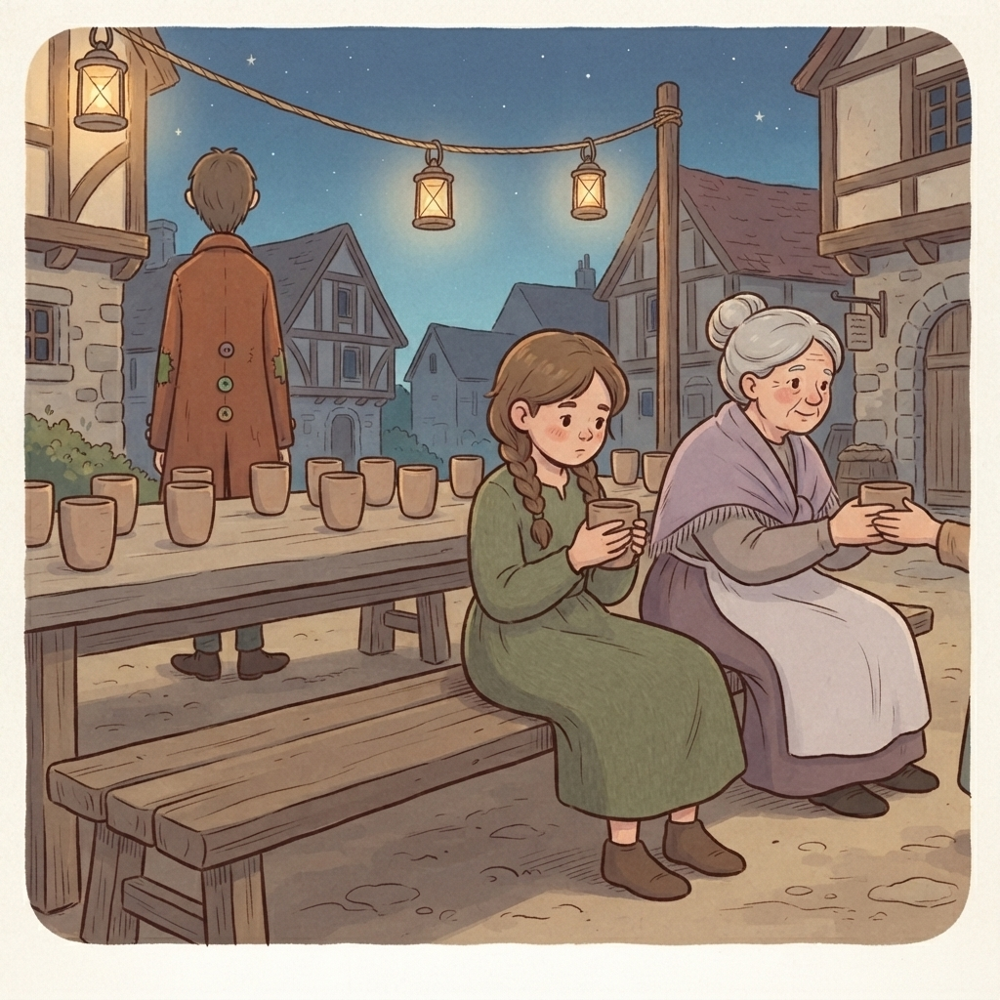

Green frame = the pick used in the game. To swap: python3 .claude/skills/openart-pictures/fetch.py pick story-c6_cups <version>, then import again.

Warm hand-drawn storybook cartoon illustration for a cosy children's farming game. Soft dark-brown ink outlines (not black), flat colours with gentle cel shading and a light paper texture, a cosy earthy palette of honey yellow, moss green, warm browns, brick red and soft sky blue. Friendly rounded characters with rosy cheeks, simple bright eyes and chunky cute proportions. Old-world countryside setting, no modern objects. Eye-level storybook view, full-bleed square illustration that fills the whole frame edge to edge, painted right into all four corners with square corners, no border, no frame, no paper margin, no vignette, no text, no letters, no logos. No collar bells or bells on any animal. Do not show the farmer; no main character in the foreground. Match the drawing style of reference image 1, using it only for the style: paint one single scene that fills the whole frame, not a sheet or a collage. Scene: A long plank table and a long wooden bench in the village square at dusk, with lanterns hung on a rope overhead giving warm light and the first stars in a deep blue sky. The seat on the bench in the foreground is empty, as if the viewer were just sitting down on it. Beside that empty seat sits Liv, a girl of about 15 with two brown plaits and a green wool dress, holding a clay cup in both hands and looking down at it, not at the viewer. Further along the bench an old woman with a grey bun and a lilac shawl hands a clay cup to the next person, whose hand is the only part of them in the picture. A row of plain clay cups stands along the table. At the far end of the table, small in the distance, stands Lark, a tall thin person in a rust-brown coat with mismatched buttons, seen from behind, very still. No other people. Every object is a plain ordinary object with no faces: no eyes or smiles on baskets, jars, sacks, tools, lanterns or buildings. No letters or numbers anywhere; any writing is shown only as rows of plain wavy lines. No people anywhere except those named in the scene, not even tiny ones in the distance or outside a window.